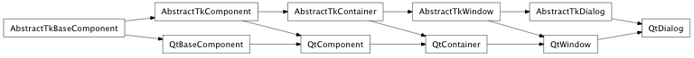
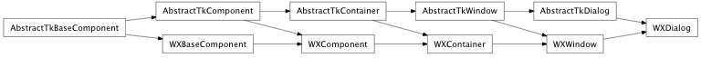

Bases: enaml.widgets.window.Window
A basic dialog widget whose contents are user defined.
The basic dialog has no buttons, but provides methods for the accept and reject behavior for the dialog.
A read only property which will be True when the dialog is open, False otherwise.
Fired when the dialog is opened.
Fired when the dialog is closed. The event payload will be the dialog result.
A read only property which is set to the result of the dialog; ‘rejected’ if rejected() was called or the window was closed via the ‘x’ window button, ‘accepted’ if accept() was called. The result is set before the ‘closed’ event is fired.
An enum which indicates the modality of the dialog. One of ‘application_modal’ or ‘window_modal’. The default value is ‘application_modal’. Changes to this attribute after the dialog is shown will have no effect.
Overridden parent class trait.
Make the dialog visible on the screen.
This is overridden from Window.show(). Since dialogs are shown modally by creating their own event loop, there is no need to start the event loop at the end of this method as in Window.

Bases: enaml.widgets.qt.qt_window.QtWindow, enaml.widgets.dialog.AbstractTkDialog
A Qt implementation of a Dialog.
This class creates a simple top-level dialog.

Bases: enaml.widgets.wx.wx_window.WXWindow, enaml.widgets.dialog.AbstractTkDialog
A wxPython implementation of a Dialog.
WXDialog uses a wx.Dialog to create a simple top-level dialog.